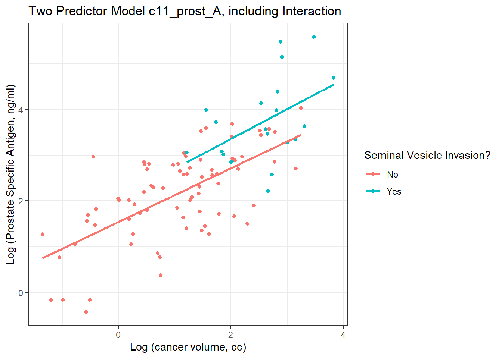
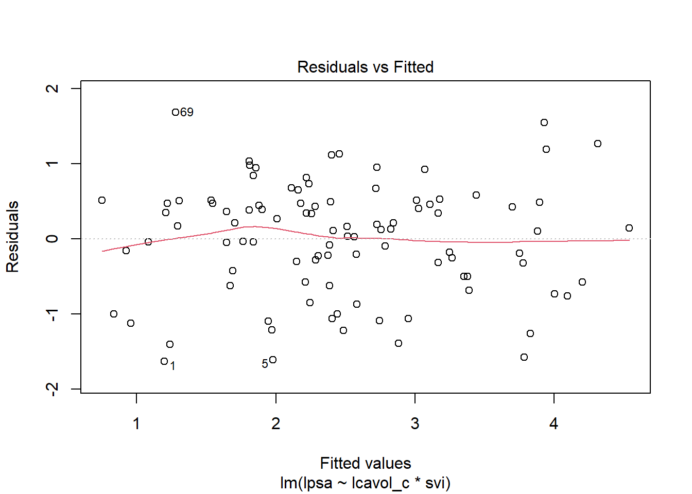
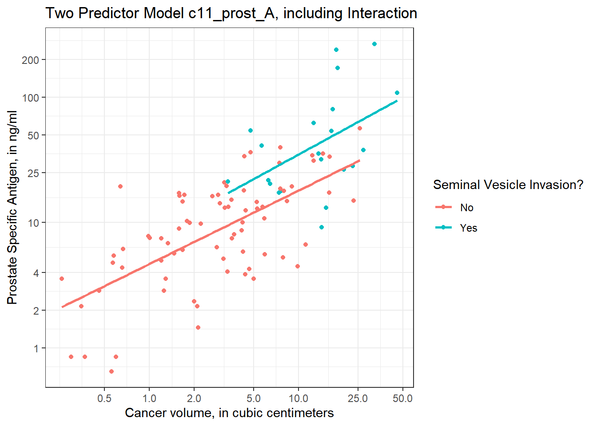

Chapter 13 A Study of Prostate Cancer
13.1 Data Load and Background
The data in prost.csv is derived from Stamey and others (1989) who examined the relationship between the level of prostate-specific antigen and a number of clinical measures in 97 men who were about to receive a radical prostatectomy. The prost data, as I’ll name it in R, contains 97 rows and 11 columns.
prost# A tibble: 97 x 10
subject lpsa lcavol lweight age bph svi lcp gleason pgg45
<dbl> <dbl> <dbl> <dbl> <dbl> <chr> <dbl> <dbl> <chr> <dbl>
1 1 -0.431 -0.580 2.77 50 Low 0 -1.39 6 0
2 2 -0.163 -0.994 3.32 58 Low 0 -1.39 6 0
3 3 -0.163 -0.511 2.69 74 Low 0 -1.39 7 20
4 4 -0.163 -1.20 3.28 58 Low 0 -1.39 6 0
5 5 0.372 0.751 3.43 62 Low 0 -1.39 6 0
6 6 0.765 -1.05 3.23 50 Low 0 -1.39 6 0
7 7 0.765 0.737 3.47 64 Medium 0 -1.39 6 0
8 8 0.854 0.693 3.54 58 High 0 -1.39 6 0
9 9 1.05 -0.777 3.54 47 Low 0 -1.39 6 0
10 10 1.05 0.223 3.24 63 Low 0 -1.39 6 0
# ... with 87 more rowsNote that a related prost data frame is also available as part of several R packages, including the faraway package, but there is an error in the lweight data for subject 32 in those presentations. The value of lweight for subject 32 should not be 6.1, corresponding to a prostate that is 449 grams in size, but instead the lweight value should be 3.804438, corresponding to a 44.9 gram prostate8.
I’ve also changed the gleason and bph variables from their presentation in other settings, to let me teach some additional details.
13.2 Code Book
| Variable | Description |
|---|---|
subject |
subject number (1 to 97) |
lpsa |
log(prostate specific antigen in ng/ml), our outcome |
lcavol |
log(cancer volume in cm3) |
lweight |
log(prostate weight, in g) |
age |
age |
bph |
benign prostatic hyperplasia amount (Low, Medium, or High) |
svi |
seminal vesicle invasion (1 = yes, 0 = no) |
lcp |
log(capsular penetration, in cm) |
gleason |
combined Gleason score (6, 7, or > 7 here) |
pgg45 |
percentage Gleason scores 4 or 5 |
Notes:
- in general, higher levels of PSA are stronger indicators of prostate cancer. An old standard (established almost exclusively with testing in white males, and definitely flawed) suggested that values below 4 were normal, and above 4 needed further testing. A PSA of 4 corresponds to an
lpsaof 1.39. - all logarithms are natural (base e) logarithms, obtained in R with the function
log() - all variables other than
subjectandlpsaare candidate predictors - the
gleasonvariable captures the highest combined Gleason score[^Scores range (in these data) from 6 (a well-differentiated, or low-grade cancer) to 9 (a high-grade cancer), although the maximum possible score is 10. 6 is the lowest score used for cancerous prostates. As this combination value increases, the rate at which the cancer grows and spreads should increase. This score refers to the combined Gleason grade, which is based on the sum of two areas (each scored 1-5) that make up most of the cancer.] in a biopsy, and higher scores indicate more aggressive cancer cells. It’s stored here as 6, 7, or > 7. - the
pgg45variable captures the percentage of individual Gleason scores[^The 1-5 scale for individual biopsies are defined so that 1 indicates something that looks like normal prostate tissue, and 5 indicates that the cells and their growth patterns look very abnormal. In this study, the percentage of 4s and 5s shown in the data appears to be based on 5-20 individual scores in most subjects.] that are 4 or 5, on a 1-5 scale, where higher scores indicate more abnormal cells.
13.3 Additions for Later Use
The code below adds to the prost tibble:
- a factor version of the
svivariable, calledsvi_f, with levels No and Yes, - a factor version of
gleasoncalledgleason_f, with the levels ordered > 7, 7, and finally 6, - a factor version of
bphcalledbph_f, with levels ordered Low, Medium, High, - a centered version of
lcavolcalledlcavol_c, - exponentiated
cavolandpsaresults derived from the natural logarithmslcavolandlpsa.
prost <- prost %>%
mutate(svi_f = fct_recode(factor(svi), "No" = "0", "Yes" = "1"),
gleason_f = fct_relevel(gleason, c("> 7", "7", "6")),
bph_f = fct_relevel(bph, c("Low", "Medium", "High")),
lcavol_c = lcavol - mean(lcavol),
cavol = exp(lcavol),
psa = exp(lpsa))
glimpse(prost)Rows: 97
Columns: 16
$ subject <dbl> 1, 2, 3, 4, 5, 6, 7, 8, 9, 10, 11, 12, 13, 14, 15, 16, 17...
$ lpsa <dbl> -0.4307829, -0.1625189, -0.1625189, -0.1625189, 0.3715636...
$ lcavol <dbl> -0.5798185, -0.9942523, -0.5108256, -1.2039728, 0.7514161...
$ lweight <dbl> 2.769459, 3.319626, 2.691243, 3.282789, 3.432373, 3.22882...
$ age <dbl> 50, 58, 74, 58, 62, 50, 64, 58, 47, 63, 65, 63, 63, 67, 5...
$ bph <chr> "Low", "Low", "Low", "Low", "Low", "Low", "Medium", "High...
$ svi <dbl> 0, 0, 0, 0, 0, 0, 0, 0, 0, 0, 0, 0, 0, 0, 0, 0, 0, 0, 0, ...
$ lcp <dbl> -1.3862944, -1.3862944, -1.3862944, -1.3862944, -1.386294...
$ gleason <chr> "6", "6", "7", "6", "6", "6", "6", "6", "6", "6", "6", "6...
$ pgg45 <dbl> 0, 0, 20, 0, 0, 0, 0, 0, 0, 0, 0, 0, 30, 5, 5, 0, 30, 0, ...
$ svi_f <fct> No, No, No, No, No, No, No, No, No, No, No, No, No, No, N...
$ gleason_f <fct> 6, 6, 7, 6, 6, 6, 6, 6, 6, 6, 6, 6, 7, 7, 7, 6, 7, 6, 6, ...
$ bph_f <fct> Low, Low, Low, Low, Low, Low, Medium, High, Low, Low, Low...
$ lcavol_c <dbl> -1.9298281, -2.3442619, -1.8608352, -2.5539824, -0.598593...
$ cavol <dbl> 0.56, 0.37, 0.60, 0.30, 2.12, 0.35, 2.09, 2.00, 0.46, 1.2...
$ psa <dbl> 0.65, 0.85, 0.85, 0.85, 1.45, 2.15, 2.15, 2.35, 2.85, 2.8...13.4 Fitting and Evaluating a Two-Predictor Model
To begin, let’s use two predictors (lcavol and svi) and their interaction in a linear regression model that predicts lpsa. I’ll call this model c11_prost_A
Earlier, we centered the lcavol values to facilitate interpretation of the terms. I’ll use that centered version (called lcavol_c) of the quantitative predictor, and the 1/0 version of the svi variable[^We could certainly use the factor version of svi here, but it won’t change the model in any meaningful way. There’s no distinction in model fitting via lm between a 0/1 numeric variable and a No/Yes factor variable. The factor version of this information will be useful elsewhere, for instance in plotting the model.].
c11_prost_A <- lm(lpsa ~ lcavol_c * svi, data = prost)
summary(c11_prost_A)
Call:
lm(formula = lpsa ~ lcavol_c * svi, data = prost)
Residuals:
Min 1Q Median 3Q Max
-1.6305 -0.5007 0.1266 0.4886 1.6847
Coefficients:
Estimate Std. Error t value Pr(>|t|)
(Intercept) 2.33134 0.09128 25.540 < 2e-16 ***
lcavol_c 0.58640 0.08207 7.145 1.98e-10 ***
svi 0.60132 0.35833 1.678 0.0967 .
lcavol_c:svi 0.06479 0.26614 0.243 0.8082
---
Signif. codes: 0 '***' 0.001 '**' 0.01 '*' 0.05 '.' 0.1 ' ' 1
Residual standard error: 0.7595 on 93 degrees of freedom
Multiple R-squared: 0.5806, Adjusted R-squared: 0.5671
F-statistic: 42.92 on 3 and 93 DF, p-value: < 2.2e-1613.4.1 Using tidy
It can be very useful to build a data frame of the model’s results. We can use the tidy function in the broom package to do so.
tidy(c11_prost_A)# A tibble: 4 x 5
term estimate std.error statistic p.value
<chr> <dbl> <dbl> <dbl> <dbl>
1 (Intercept) 2.33 0.0913 25.5 8.25e-44
2 lcavol_c 0.586 0.0821 7.15 1.98e-10
3 svi 0.601 0.358 1.68 9.67e- 2
4 lcavol_c:svi 0.0648 0.266 0.243 8.08e- 1This makes it much easier to pull out individual elements of the model fit.
For example, to specify the coefficient for svi, rounded to three decimal places, I could use
tidy(c11_prost_A) %>% filter(term == "svi") %>% select(estimate) %>% round(., 3)- The result is 0.601.
- If you look at the Markdown file, you’ll see that the number shown in the bullet point above this one was generated using inline R code, and the function specified above.
13.4.2 Interpretation
- The intercept, 2.33, for the model is the predicted value of
lpsawhenlcavolis at its average and there is no seminal vesicle invasion (e.g.svi= 0). - The coefficient for
lcavol_c, 0.59, is the predicted change inlpsaassociated with a one unit increase inlcavol(orlcavol_c) when there is no seminal vesicle invasion. - The coefficient for
svi, 0.6, is the predicted change inlpsaassociated with having nosvito having ansviwhile thelcavolremains at its average. - The coefficient for
lcavol_c:svi, the product term, which is 0.06, is the difference in the slope oflcavol_cfor a subject withsvias compared to one with nosvi.
13.5 Exploring Model c11_prost_A
The glance function from the broom package builds a nice one-row summary for the model.
glance(c11_prost_A)# A tibble: 1 x 12
r.squared adj.r.squared sigma statistic p.value df logLik AIC BIC
<dbl> <dbl> <dbl> <dbl> <dbl> <dbl> <dbl> <dbl> <dbl>
1 0.581 0.567 0.759 42.9 1.68e-17 3 -109. 228. 241.
# ... with 3 more variables: deviance <dbl>, df.residual <int>, nobs <int>This summary includes, in order,
- the model \(R^2\), adjusted \(R^2\) and \(\hat{\sigma}\), the residual standard deviation,
- the ANOVA F statistic and associated p value,
- the number of degrees of freedom used by the model, and its log-likelihood ratio
- the model’s AIC (Akaike Information Criterion) and BIC (Bayesian Information Criterion)
- the model’s deviance statistic and residual degrees of freedom
13.5.1 summary for Model c11_prost_A
If necessary, we can also run summary on this c11_prost_A object to pick up some additional summaries. Since the svi variable is binary, the interaction term is, too, so the t test here and the F test in the ANOVA yield the same result.
summary(c11_prost_A)
Call:
lm(formula = lpsa ~ lcavol_c * svi, data = prost)
Residuals:
Min 1Q Median 3Q Max
-1.6305 -0.5007 0.1266 0.4886 1.6847
Coefficients:
Estimate Std. Error t value Pr(>|t|)
(Intercept) 2.33134 0.09128 25.540 < 2e-16 ***
lcavol_c 0.58640 0.08207 7.145 1.98e-10 ***
svi 0.60132 0.35833 1.678 0.0967 .
lcavol_c:svi 0.06479 0.26614 0.243 0.8082
---
Signif. codes: 0 '***' 0.001 '**' 0.01 '*' 0.05 '.' 0.1 ' ' 1
Residual standard error: 0.7595 on 93 degrees of freedom
Multiple R-squared: 0.5806, Adjusted R-squared: 0.5671
F-statistic: 42.92 on 3 and 93 DF, p-value: < 2.2e-16If you’ve forgotten the details of the pieces of this summary, review the Part C Notes from 431.
13.5.2 Adjusted R2
R2 is greedy.
- R2 will always suggest that we make our models as big as possible, often including variables of dubious predictive value.
- As a result, there are various methods for penalizing R2 so that we wind up with smaller models.
- The adjusted R2 is often a useful way to compare multiple models for the same response.
- \(R^2_{adj} = 1 - \frac{(1-R^2)(n - 1)}{n - k}\), where \(n\) = the number of observations and \(k\) is the number of coefficients estimated by the regression (including the intercept and any slopes).
- So, in this case, \(R^2_{adj} = 1 - \frac{(1 - 0.5806)(97 - 1)}{97 - 4} = 0.5671\)
- The adjusted R2 value is not, technically, a proportion of anything, but it is comparable across models for the same outcome.
- The adjusted R2 will always be less than the (unadjusted) R2.
13.5.3 Coefficient Confidence Intervals
Here are the 90% confidence intervals for the coefficients in Model A. Adjust the level to get different intervals.
confint(c11_prost_A, level = 0.90) 5 % 95 %
(Intercept) 2.17968697 2.4830012
lcavol_c 0.45004577 0.7227462
svi 0.00599401 1.1966454
lcavol_c:svi -0.37737623 0.5069622What can we conclude from this about the utility of the interaction term?
13.5.4 ANOVA for Model c11_prost_A
The interaction term appears unnecessary. We might wind up fitting the model without it. A complete ANOVA test is available, including a p value, if you want it.
anova(c11_prost_A)Analysis of Variance Table
Response: lpsa
Df Sum Sq Mean Sq F value Pr(>F)
lcavol_c 1 69.003 69.003 119.6289 < 2.2e-16 ***
svi 1 5.237 5.237 9.0801 0.003329 **
lcavol_c:svi 1 0.034 0.034 0.0593 0.808191
Residuals 93 53.643 0.577
---
Signif. codes: 0 '***' 0.001 '**' 0.01 '*' 0.05 '.' 0.1 ' ' 1Note that the anova approach for a lm object is sequential. The first row shows the impact of lcavol_c as compared to a model with no predictors (just an intercept). The second row shows the impact of adding svi to a model that already contains lcavol_c. The third row shows the impact of adding the interaction (product) term to the model with the two main effects. So the order in which the variables are added to the regression model matters for this ANOVA. The F tests here describe the incremental impact of each covariate in turn.
13.5.5 Residuals, Fitted Values and Standard Errors with augment
The augment function in the broom package builds a data frame including the data used in the model, along with predictions (fitted values), residuals and other useful information.
c11_prost_A_frame <- augment(c11_prost_A) %>% tbl_df
summary(c11_prost_A_frame) lpsa lcavol_c svi .fitted
Min. :-0.4308 Min. :-2.69708 Min. :0.0000 Min. :0.7498
1st Qu.: 1.7317 1st Qu.:-0.83719 1st Qu.:0.0000 1st Qu.:1.8404
Median : 2.5915 Median : 0.09691 Median :0.0000 Median :2.3950
Mean : 2.4784 Mean : 0.00000 Mean :0.2165 Mean :2.4784
3rd Qu.: 3.0564 3rd Qu.: 0.77703 3rd Qu.:0.0000 3rd Qu.:3.0709
Max. : 5.5829 Max. : 2.47099 Max. :1.0000 Max. :4.5417
.resid .std.resid .hat .sigma
Min. :-1.6305 Min. :-2.194508 Min. :0.01316 Min. :0.7423
1st Qu.:-0.5007 1st Qu.:-0.687945 1st Qu.:0.01562 1st Qu.:0.7569
Median : 0.1266 Median : 0.168917 Median :0.02498 Median :0.7617
Mean : 0.0000 Mean : 0.001249 Mean :0.04124 Mean :0.7595
3rd Qu.: 0.4886 3rd Qu.: 0.653612 3rd Qu.:0.04939 3rd Qu.:0.7631
Max. : 1.6847 Max. : 2.261830 Max. :0.24627 Max. :0.7636
.cooksd
Min. :0.0000069
1st Qu.:0.0007837
Median :0.0034699
Mean :0.0111314
3rd Qu.:0.0103533
Max. :0.1341093 Elements shown here include:
.fittedFitted values of model (or predicted values).se.fitStandard errors of fitted values.residResiduals (observed - fitted values).hatDiagonal of the hat matrix (these indicate leverage - points with high leverage indicate unusual combinations of predictors - values more than 2-3 times the mean leverage are worth some study - leverage is always between 0 and 1, and measures the amount by which the predicted value would change if the observation’s y value was increased by one unit - a point with leverage 1 would cause the line to follow that point perfectly).sigmaEstimate of residual standard deviation when corresponding observation is dropped from model.cooksdCook’s distance, which helps identify influential points (values of Cook’s d > 0.5 may be influential, values > 1.0 almost certainly are - an influential point changes the fit substantially when it is removed from the data).std.residStandardized residuals (values above 2 in absolute value are worth some study - treat these as normal deviates [Z scores], essentially)
See ?augment.lm in R for more details.
13.5.6 Making Predictions with c11_prost_A
Suppose we want to predict the lpsa for a patient with cancer volume equal to this group’s mean, for both a patient with and without seminal vesicle invasion, and in each case, we want to use a 90% prediction interval?
newdata <- data.frame(lcavol_c = c(0,0), svi = c(0,1))
predict(c11_prost_A, newdata, interval = "prediction", level = 0.90) fit lwr upr
1 2.331344 1.060462 3.602226
2 2.932664 1.545742 4.319586Since the predicted value in fit refers to the natural logarithm of PSA, to make the predictions in terms of PSA, we would need to exponentiate. The code below will accomplish that task.
pred <- predict(c11_prost_A, newdata, interval = "prediction", level = 0.90)
exp(pred) fit lwr upr
1 10.29177 2.887706 36.67978
2 18.77758 4.691450 75.1575013.6 Plotting Model c11_prost_A
13.6.0.1 Plot logs conventionally
Here, we’ll use ggplot2 to plot the logarithms of the variables as they came to us, on a conventional coordinate scale. Note that the lines are nearly parallel. What does this suggest about our Model A?
ggplot(prost, aes(x = lcavol, y = lpsa, group = svi_f, color = svi_f)) +
geom_point() +
geom_smooth(method = "lm", se = FALSE) +
scale_color_discrete(name = "Seminal Vesicle Invasion?") +
theme_bw() +
labs(x = "Log (cancer volume, cc)",
y = "Log (Prostate Specific Antigen, ng/ml)",
title = "Two Predictor Model c11_prost_A, including Interaction")`geom_smooth()` using formula 'y ~ x'
13.6.0.2 Plot on log-log scale
Another approach (which might be easier in some settings) would be to plot the raw values of Cancer Volume and PSA, but use logarithmic axes, again using the natural (base e) logarithm, as follows. If we use the default choice with `trans = “log,” we’ll find a need to select some useful break points for the grid, as I’ve done in what follows.
ggplot(prost, aes(x = cavol, y = psa, group = svi_f, color = svi_f)) +
geom_point() +
geom_smooth(method = "lm", se = FALSE) +
scale_color_discrete(name = "Seminal Vesicle Invasion?") +
scale_x_continuous(trans = "log",
breaks = c(0.5, 1, 2, 5, 10, 25, 50)) +
scale_y_continuous(trans = "log",
breaks = c(1, 2, 4, 10, 25, 50, 100, 200)) +
theme_bw() +
labs(x = "Cancer volume, in cubic centimeters",
y = "Prostate Specific Antigen, in ng/ml",
title = "Two Predictor Model c11_prost_A, including Interaction")`geom_smooth()` using formula 'y ~ x'I’ve used the break point of 4 on the Y axis because of the old rule suggesting further testing for asymptomatic men with PSA of 4 or higher, but the other break points are arbitrary - they seemed to work for me, and used round numbers.
13.6.1 Residual Plots of c11_prost_A
plot(c11_prost_A, which = 1)
plot(c11_prost_A, which = 5)
13.7 Cross-Validation of Model c11_prost_A
Suppose we want to evaluate whether our model c11_prost_A predicts effectively in new data.
13.7.1 A Validation Split Approach
We’ll first demonstrate a validation split approach (used, for instance, in 431) which splits our sample into a separate training (perhaps 70% of the data) and test (perhaps 30% of the data) samples, and then:
- fit the model in the training sample,
- use the resulting model to make predictions for
lpsain the test sample, and - evaluate the quality of those predictions, perhaps by comparing the results to what we’d get using a different model.
Our goal will be to cross-validate model c11_prost_A, which, you’ll recall, uses lcavol_c, svi and their interaction, to predict lpsa in the prost data.
We’ll start by identifying a random sample of 70% of our prost data in a training sample (which we’ll call prost_train, and leave the rest as our test sample, called prost_test. To do this, we’ll use the createDataPartition function from the caret package. We need only specify the data set and outcome variable, like so.
set.seed(4322020)
split_samples <- prost$lpsa %>%
createDataPartition(p = 0.7, list = FALSE)
prost_train <- prost[split_samples,]Warning: The `i` argument of ``[`()` can't be a matrix as of tibble 3.0.0.
Convert to a vector.
This warning is displayed once every 8 hours.
Call `lifecycle::last_warnings()` to see where this warning was generated.prost_test <- prost[-split_samples,]- Note the need for a comma after
split_samplesin the isolation of the training and test samples. - Don’t forget to pre-specify the random seed, for replicability, as I’ve done here.
Let’s verify that we now have the samples we expect…
dim(prost_train)[1] 70 16dim(prost_test)[1] 27 16OK. Next, we’ll run the c11_prost_A model in the training sample.
c11_prost_A_train <- prost_train %$%
lm(lpsa ~ lcavol_c * svi)
c11_prost_A_train
Call:
lm(formula = lpsa ~ lcavol_c * svi)
Coefficients:
(Intercept) lcavol_c svi lcavol_c:svi
2.2956 0.5919 0.6282 0.1597 Then we’ll use the coefficients from this model to obtain predicted lpsa values in the test sample.
c11_prost_A_preds <-
c11_prost_A_train %>% predict(prost_test)
c11_prost_A_preds[1:3] 1 2 3
1.647217 2.210338 2.408746 Now, we can use the postResample function from the caret package to obtain several key summaries of fit quality for our model. Here, we specify the estimates (or predictions), and then the observed values to the postResample function.
postResample(c11_prost_A_preds, prost_test$lpsa) RMSE Rsquared MAE
0.6651311 0.5503311 0.5524172 These summary statistics are:
- the RMSE or root mean squared error, which measures the average difference (i.e. prediction error) between the observed known outcome values and the values predicted by the model by first squaring all of the errors, averaging them, and then taking the square root of the result. The lower the RMSE, the better the model.
- the Rsquared or \(R^2\), which is just the square of the Pearson correlation coefficient relating the predicted and observed values, so we’d like this to be as large as possible, and
- the MAE or mean absolute error, which is a bit less sensitive to outliers than the RMSE, because it measures the average prediction error by taking the absolute value of each error, and then grabbing the average of those values. The lower the MAE, the better the model.
These statistics are more helpful, generally, for comparing multiple models to each other, than for making final decisions on their own. The caret package also provides individual functions to gather the elements of postResample as follows.
prost_A_summaries <- tibble(
RMSE = RMSE(c11_prost_A_preds, prost_test$lpsa),
R2 = R2(c11_prost_A_preds, prost_test$lpsa),
MAE = MAE(c11_prost_A_preds, prost_test$lpsa)
)
prost_A_summaries# A tibble: 1 x 3
RMSE R2 MAE
<dbl> <dbl> <dbl>
1 0.665 0.550 0.55213.7.2 K-Fold Cross-Validation
One problem with the validation split approach is that with a small data set like prost, we may be reluctant to cut our sample size for the training or the testing down because we’re afraid that our model building and testing will be hampered by a small sample size. A potential solution is the idea of K-fold cross-validation, which involves partitioning our data into a series of K training-test subsets, and then combining the results. Specifically, we’ll try a 5-fold cross validation here. (K is usually taken to be either 5 or 10.)
The approach includes the following steps.
- Randomly split the
prostdata into 5 subsets (for 5-fold validation). - Reserve one subset and train the model on all other subsets.
- Test the model on the reserved subset and record the prediction error.
- Repeat this process until each of the k subsets has served as the test set.
- Compute the average of the k recorded errors. This is called the cross-validation error and serves as the primary performance metric for the model.
Again using tools from the caret packages, we’ll first define our trainControl approach.
set.seed(43220201)
train.control <- trainControl(method = "cv", number = 5)Then we train the model, and obtain the usual summaries of model fit quality.
c11_modelA_cv <- train(lpsa ~ lcavol_c * svi,
data = prost, method = "lm",
trControl = train.control)
c11_modelA_cvLinear Regression
97 samples
2 predictor
No pre-processing
Resampling: Cross-Validated (5 fold)
Summary of sample sizes: 77, 77, 77, 79, 78
Resampling results:
RMSE Rsquared MAE
0.7583897 0.5657784 0.6213951
Tuning parameter 'intercept' was held constant at a value of TRUEWe can then look at the model fit by this cross-validation approach.
summary(c11_modelA_cv)
Call:
lm(formula = .outcome ~ ., data = dat)
Residuals:
Min 1Q Median 3Q Max
-1.6305 -0.5007 0.1266 0.4886 1.6847
Coefficients:
Estimate Std. Error t value Pr(>|t|)
(Intercept) 2.33134 0.09128 25.540 < 2e-16 ***
lcavol_c 0.58640 0.08207 7.145 1.98e-10 ***
svi 0.60132 0.35833 1.678 0.0967 .
`lcavol_c:svi` 0.06479 0.26614 0.243 0.8082
---
Signif. codes: 0 '***' 0.001 '**' 0.01 '*' 0.05 '.' 0.1 ' ' 1
Residual standard error: 0.7595 on 93 degrees of freedom
Multiple R-squared: 0.5806, Adjusted R-squared: 0.5671
F-statistic: 42.92 on 3 and 93 DF, p-value: < 2.2e-16or, if you prefer,
tidy(summary(c11_modelA_cv), conf.int = TRUE) %>%
kable(digits = 3)| term | estimate | std.error | statistic | p.value | conf.low | conf.high |
|---|---|---|---|---|---|---|
| (Intercept) | 2.331 | 0.091 | 25.540 | 0.000 | 2.150 | 2.513 |
| lcavol_c | 0.586 | 0.082 | 7.145 | 0.000 | 0.423 | 0.749 |
| svi | 0.601 | 0.358 | 1.678 | 0.097 | -0.110 | 1.313 |
lcavol_c:svi
|
0.065 | 0.266 | 0.243 | 0.808 | -0.464 | 0.593 |
and
glance(summary(c11_modelA_cv)) %>%
kable(digits = c(3,3,3,2,3,0))| r.squared | adj.r.squared | sigma | statistic | p.value | df | df.residual | nobs |
|---|---|---|---|---|---|---|---|
| 0.581 | 0.567 | 0.759 | 42.92 | 0 | 3 | 93 | 97 |
13.7.3 Comparing Models with 5-fold Cross-Validation
To make this a bit more realistic, let’s compare two models:
- our existing linear model lpsa ~ lcavol_c * svi, and
- a robust linear model fit with the
rlmfunction in R, to predictlpsausinglcavol_candsvibut not the interaction between them.
The main purpose of robust linear models is to reduce the influence of specifically outlier or high leverage data points.
Here’s that robust fit in the original prost_train data set. Note that fitting a robust linear model requires the choice of a psi (\(\psi\)) function, for which R provides three approaches, called the Huber, Hampel and Tukey bisquare approaches. In this fit, I’ll just let R pick its default choice.
modelR <- prost_train %$% rlm(lpsa ~ lcavol_c + svi)
summary(modelR)
Call: rlm(formula = lpsa ~ lcavol_c + svi)
Residuals:
Min 1Q Median 3Q Max
-1.5904 -0.5869 0.1139 0.4902 1.7254
Coefficients:
Value Std. Error t value
(Intercept) 2.3241 0.1356 17.1459
lcavol_c 0.6050 0.1139 5.3123
svi 0.7526 0.3296 2.2836
Residual standard error: 0.7819 on 67 degrees of freedomCompare this with the standard ordinary least squares fit to the same data (again without the interaction term), and you’ll see that in this case, the main differences are in the estimated standard errors, but the slope coefficients are also a bit smaller in the robust model.
modelO <- prost_train %$% lm(lpsa ~ lcavol_c + svi)
summary(modelO)
Call:
lm(formula = lpsa ~ lcavol_c + svi)
Residuals:
Min 1Q Median 3Q Max
-1.5661 -0.5616 0.1128 0.5130 1.7535
Coefficients:
Estimate Std. Error t value Pr(>|t|)
(Intercept) 2.30169 0.11291 20.386 < 2e-16 ***
lcavol_c 0.60820 0.09487 6.411 1.69e-08 ***
svi 0.79147 0.27451 2.883 0.00529 **
---
Signif. codes: 0 '***' 0.001 '**' 0.01 '*' 0.05 '.' 0.1 ' ' 1
Residual standard error: 0.7948 on 67 degrees of freedom
Multiple R-squared: 0.5924, Adjusted R-squared: 0.5803
F-statistic: 48.7 on 2 and 67 DF, p-value: 8.738e-14So, how can we do 5-fold cross-validation on our model R, and also let the computer pick which of the three types of initial weights (Huber, Hampel or Tukey Bisquare) might be most appropriate? As follows…
c11_modelR_cv <- train(lpsa ~ lcavol_c + svi,
data = prost, method = "rlm",
trControl = train.control)
c11_modelR_cvRobust Linear Model
97 samples
2 predictor
No pre-processing
Resampling: Cross-Validated (5 fold)
Summary of sample sizes: 78, 77, 77, 78, 78
Resampling results across tuning parameters:
intercept psi RMSE Rsquared MAE
FALSE psi.huber 2.1261462 0.3643515 1.8841211
FALSE psi.hampel 2.1253158 0.3652711 1.8837252
FALSE psi.bisquare 2.1260854 0.3560150 1.8818567
TRUE psi.huber 0.7683316 0.5741134 0.6358550
TRUE psi.hampel 0.7634386 0.5773235 0.6352990
TRUE psi.bisquare 0.7690475 0.5745092 0.6371126
RMSE was used to select the optimal model using the smallest value.
The final values used for the model were intercept = TRUE and psi = psi.hampel.Compare these RMSE, Rsquared and MAE values to those we observed in the interaction model with lm earlier…
c11_modelA_cvLinear Regression
97 samples
2 predictor
No pre-processing
Resampling: Cross-Validated (5 fold)
Summary of sample sizes: 77, 77, 77, 79, 78
Resampling results:
RMSE Rsquared MAE
0.7583897 0.5657784 0.6213951
Tuning parameter 'intercept' was held constant at a value of TRUEThe robust model showes a larger R-Squared, smaller RMSE and smaller MAE than the interaction model. Perhaps we’ll focus further on model R going forward…
summary(c11_modelR_cv)
Call: rlm(formula = .outcome ~ ., data = dat, psi = psi)
Residuals:
Min 1Q Median 3Q Max
-1.6203 -0.5297 0.1191 0.4852 1.6939
Coefficients:
Value Std. Error t value
(Intercept) 2.3340 0.0939 24.8529
lcavol_c 0.5930 0.0807 7.3521
svi 0.6685 0.2296 2.9111
Residual standard error: 0.7483 on 94 degrees of freedomLet’s stop there for now. Next, we’ll consider the problem of considering adding more predictors to a linear model, and then making sensible selections as to which predictors actually should be incorporated.
https://statweb.stanford.edu/~tibs/ElemStatLearn/ attributes the correction to Professor Stephen W. Link.↩︎